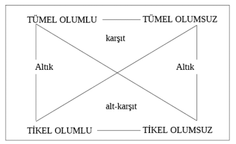

EK: II TASIMIN BİÇİMLERİ VE KİPLERİ
Aristoteles’e göre, orta terimin yerinin değişmesi, üç temel tasım biçimi meydana getirir:
I. Orta terim büyük önermede özne, küçük önermede yüklemdir.
M P
S M
S P
II. Orta terim, hem büyük önermede, hem de küçük önermede, yüklemdir.
P M
S M
S P
III. Orta terim, hem büyük önermede, hem de küçük önermede özne (konu) durumundadır.
M P
M S
S P
Bunların dışında, Aristoteles’ten sonra, onun öğrencileri ve Skolastikçiler tarafından bir dördüncü tasım biçimi daha bulunmuştur.
IV. Orta terim, büyük önermede yüklem, küçük önermede özne durumundadır.
P M
M S
S P
Tasımın bu temel biçimleri dışında bir de kipleri vardır.
Her tasım biçimi, önermelerinin niceliği ve niteliğine göre belirlenen özel bir yapı gösterir. Bu yapıya tasımın kipi denir. Kipler, büyük ve küçük önermelerin niceliklerinin ve niteliklerinin ilişkisiyle, vargının her tasım biçimi için kazanacağı nicelik ve niteliği tanımlarlar. Biçim ve kip arasında kurala bağlanmış bir ilişki vardır.
Kipleri tayin eden önerme türleri, belli harflerle sembolize edilmişlerdir:
A : Tümel olumlu
E : Tümel olumsuz
İ : Tikel olumlu
O : Tikel olumsuz
Kipler, tasımın çıkarım kurallarını verdikleri için, büyük öneme sahip görülürler. Mantıklı düşünmek ve doğru sonuçlara varabilmek, ancak tasımın biçimiyle kipi arasındaki ilişki kuralına uyarak mümkün olacaktır. Her tasım biçimi için farklı sayılarda kipler bulunduğu öne sürülmüştür. Kuralları, örnekler üzerinde göstereceğiz.
Tasımın birinci biçiminin dört kipi vardır.
1. İlk iki önerme tümel olumlu ise, vargı da tümel olumlu olur.
A- Bütün M’ler P’dir.
A- Bütün S’ler M’dir.
A- Bütün S’ler P’dir.
2. Büyük önerme tümel olumsuz, küçük önerme tümel olumlu ise, vargı tümel olumsuz olur.
E- Hiçbir M, P değildir.
A- Bütün S’ler M’dir.
E- Hiçbir S, P değildir.
3. Büyük önerme tümel olumlu, küçük önerme tikel olumlu ise, vargı tikel olumlu olur.
A- Bütün M’ler P’dir.
İ- Bazı S’ler M’dir.
İ- Bazı S’ler P’dir.
4. Büyük önerme tümel olumsuz, küçük önerme, tikel olumlu ise, vargı tikel olumsuz olur.
E- Hiçbir M, P değildir
İ- Bazı S’ler M’dir.
O- Bazı S’ler P değildir.
Tasımın ikinci biçiminin de dört kipi vardır.
1. Büyük önerme tümel olumlu, küçük önerme tümel olumsuz ise, vargı tümel olumsuz olur.
A- Bütün P’ler M’dir
E- Hiçbir S, M değildir
E- Hiçbir S, P değildir.
2. Büyük önerme tümel olumsuz, küçük önerme tümel olumlu ise, vargı tümel olumsuz olur.
E- Hiçbir P, M değildir.
A- Bütün S’ler, M’dir.
E- Hiçbir S, P değildir
3. Büyük önerme tümel olumsuz, küçük önerme tikel olumlu ise, vargı tikel olumsuz olur.
E- Hiçbir P, M değildir
İ- Bazı S’ler M’dir
O- Bazı S’ler P değildir.
4. Büyük önerme tümel olumlu, küçük önerme tikel olumsuz ise, vargı tikel olumsuz olur.
A- Bütün P’ler M’dir
O-Bazı S’ler M değildir.
O- Bazı S’ler P değildir.
Tasımın üçüncü biçiminin altı kipi vardır
1. Büyük önerme tümel olumlu, küçük önerme de tümel olumlu ise, vargı, bu biçimde, tikel olumlu olur.
A-Bütün M’ler P’dir
A- Bütün M’ler S’dir
İ- Bazı S’ler P’dir.
2. Büyük önerme tümel olumsuz, küçük önerme tümel olumlu ise, vargı tikel olumsuz olur.
E- Hiçbir M, P değildir
A- Bütün M’ler S’dir
O-Bazı S’ler P değildir.
3. Büyük önerme tikel olumlu küçük önerme tümel olumlu ise, vargı tikel olumlu olur.
İ- Bazı M’ler P’dir
A- Bütün M’ler S’dir
İ- Bazı S’ler P’dir.
4. Büyük önerme tümel olumlu, küçük önerme tikel olumlu ise, vargı tikel olumlu olur.
A-Bütün M’ler P’dir
İ- Bazı M’ler S’dir
İ- Bazı S’ler P’dir.
5. Büyük önerme, tümel olumsuz, küçük önerme tikel olumlu ise, vargı tikel olumsuz olacaktır.
E- Hiçbir M P değildir
İ- Bazı M’ler S’dir
O- Bazı S’ler P değildir.
6. Büyük önerme, tikel olumsuz, küçük önerme tümel olumlu ise, vargı tikel olumsuz olur.
O- Bazı M’ler P’ değildir
A- Bütün M’ler S’dir
O- Bazı S’ler P’ değildir.

Aristoteles’in, tasımın biçimleri ve kipleri hakkındaki teorisi, Skolastiğin elinde, tam bir dogma haline getirilmiş, Aristoteles’te önermelerin ve tasım’ın olgusal içeriği –sınanabilir doğruluğu ya da yanlışlığı– önem taşımışken, artık yalnızca biçimin önemli olduğu bir anlayış egemen kılınmıştır. Böylece, doğruluğu inanca bağlı olarak saptanan bir temel öncülden, biçime ve kiplere uyularak yapılacak çıkarsamanın sonuçlarının tartışılamaz doğrulukta olduğu kabul edilmiştir. Bilgi süreci, tasımın tümdengelim sürecine indirgenmiştir. Böyle bir tanıtlama çabası için Aristoteles’in çalışmaları yetmez görülünce de, tasım biçimleri dörde, kip sayısı da altmış dörde kadar çıkarılabilmiştir.
TASIM TÜRLERİ
- Çok Tasım:
Birbirine bağlı birçok önermeden meydana gelen tasım, çok tasım diye adlandırılır. Burada bir tasımın vargısı, sonraki bir başka tasımın öncülü olur. Öncül konumunda bulunan tasıma öntasım, bu öncüle dayanan tasıma da astasım denir.
Eğlenceli ve klasik örneği, Tilki uslamlaması diye anılır; bir dereyi geçmekle geçmemek arasında ikircikli kalan tilkinin tümdengelim yapmasını anlatır.
Bu nehir gürüldüyor
Gürüldeyen şeyler hareketlidir
Bu nehir hareketlidir
Hareketli olan şeyler donmuş değildir
Bu nehir donmuş değildir
Donmamış olanda yürünmez
Bu nehirde yürünmez.
Tilki, birbirine bağlı üç tasım kuruyor; öyle ki, birincinin vargısı ikincinin ve ikincinin vargısı da üçüncünün öncülüdür. Böylece birbirleri içinden geçerek, ilk önermeden son vargıya tasımlar yoluyla gidiliyor.
- Zincirleme Tasım:
Bir dizi önerme, eğer öncekinin yüklemi sonrakinin öznesi olacak şekilde art arda dizilmişlerse, bu tasıma zincirleme tasım denir.
Şöyle formülleştirilir:
Her A, B’dir
Her B, C’dir,
Her C, D’dir,
Her A, D’dir.
Vargıda belirtildiği üzere, A’nın D olması sonucu, B ve C’nin hem birbirlerine, hem de ayrı ayrı A ve D’ye özdeş olmalarına bağlı olarak ortaya çıkmıştır. Birinci ve ikinci önermelerin orta terimi B’dir ve A ile C’yi birbirine bağlamıştır. İkinci ve üçüncü önermelerin orta terimi C’dir ve B ile D’yi birbirine bağlamıştır. B ise, başlangıçta A ile özdeş olarak verildiğine göre, A ile D özdeş, olmaktadır.
Osmanlı Devlet geleneği üzerine uydurulmuş şu özdeyişler dizisi, bu formüle göre kurulmuştur:
Adldir, mucib-i salahı cihan,
Cihan bir bağdır, dıvarı devlet,
Devletin yatımı şeriattir,
Şeriata olamaz hiç haris ille melik,
Melik zapteyleyemez ille leşker,
Leşkeri cemedemez ille mal,
Malı cemeden raiyettir,
Raiyeti kul eder padişahı aleme Adalet.
Bu sözler, bir çember şeklinde yazıldığında, son bulduğu yerden yeniden başlar ve defalarca okunabilir. Adalet ile başlamış ve adaletin devlet örgütlenmesindeki yeri ve unsurlarını belli bir yönetim felsefesi açısından özetlemiştir. Ancak diziliş öyle kurulmuştur ki, her önermenin yüklemi, sonrakinin öznesidir ve böylece, devletin unsurları birbirlerine özdeşlenmekte ve aralarında bulunduğu varsayılan kopmaz bağ böylece vurgulanmaktır.